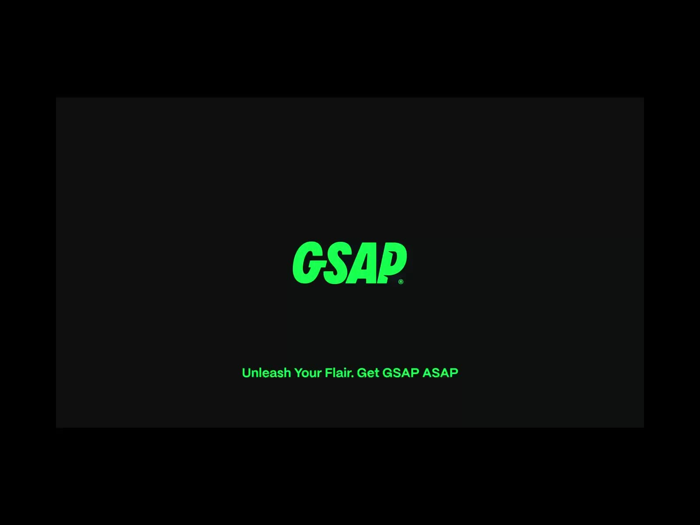

Animations with GSAP: A Practical Introduction
Published on June 29, 2025 • 5 min read

CSS animations and libraries like AOS are fantastic for adding a simple 'fade-in' or 'slide' to an element. But what happens when you need more? What about when you want to create a choreographed sequence, where multiple elements dance on the screen with full control over timing and interaction, almost like in a video production?
This is where GSAP (GreenSock Animation Platform) comes in. Think of it as the 'Adobe After Effects' of web development. It's a high-performance, industry-standard JavaScript library made for creating complex animations with total control. In this article, I'll share how I implemented more sophisticated animations in my portfolio using GSAP and how you can take your first steps too.
Section 1: The Basics - Installation and First Animation
1.1. Setup via CDN
The easiest way to start using GSAP is through a CDN. You don't need to install anything, just add the scripts to your HTML file, preferably before the closing </body> tag. We'll need two files: the main GSAP file and its most famous plugin, ScrollTrigger, for scroll-based animations.
<!-- GSAP ANIMATION LIBRARY AND SCROLLTRIGGER PLUGIN -->
<script src="https://cdnjs.cloudflare.com/ajax/libs/gsap/3.12.2/gsap.min.js"></script>
<script src="https://cdnjs.cloudflare.com/ajax/libs/gsap/3.12.2/ScrollTrigger.min.js"></script>
<script src="your-main-script.js" defer></script>
1.2. Your First Animation: gsap.from()
The most intuitive way to animate with GSAP is with the gsap.from() method. It works like this: you define in CSS how the element should look in its final state, and in JavaScript, you tell GSAP what initial state it should animate from. Let's animate a title so it slides up from the bottom.
// Inside your script file
// Animates the element with the '.my-title' class
gsap.from(".my-title", {
duration: 1.2, // The animation lasts 1.2 seconds
y: 100, // The initial state is 100px BELOW the final position
opacity: 0, // The initial state is completely invisible
ease: "power3.out" // Smooth deceleration effect at the end
});
Section 2: Sequencing Animations with Timelines
What if we want to create a sequence, where one element animates first and the other right after? For that, GSAP has Timelines, which work exactly like a timeline in a video editing software.
gsap.timeline()
.from(".hero-section h1", { y: 100, opacity: 0, duration: 1.2, ease: "power3.out" })
.from(".hero-section p", { y: 50, opacity: 0, duration: 1 }, "-=0.8"); // Starts 0.8s before the previous animation ends
With a timeline, we can chain as many animations as we want. The "-=0.8" parameter is a trick to create a smooth overlap, making the second animation start a little before the first one finishes, creating a more fluid effect.
Section 3: The Power of ScrollTrigger
Now for the fun part. Let's make an animation that only starts when the user scrolls the page to a certain section. That's what we use the ScrollTrigger plugin for. The logic is simple: we define a 'trigger', which is the element that, upon entering the screen, fires the animation. We also define when the animation should start (start).
// First, we "register" the plugin
gsap.registerPlugin(ScrollTrigger);
// Animates the image column when the #about section enters the screen
gsap.from("#about .image-column", {
scrollTrigger: {
trigger: "#about", // Animation trigger
start: "top 80%", // Starts when the top of the section reaches 80% of the screen height
},
x: -100, // Starts 100px to the LEFT
opacity: 0,
duration: 1.5,
ease: "power3.out"
});
Note: For this example to work, make sure the div containing the image in your 'About' section has the class image-column in your HTML file.
Conclusion
In this article, we've only scratched the surface of what GSAP can do. We saw how to create basic animations with gsap.from(), how to trigger them on page scroll using ScrollTrigger, and how to sequence them with a timeline.
Learning GSAP opened up a new range of possibilities for me, allowing me to apply motion design concepts directly to web development. It's the perfect tool for someone who, like me, loves both the logic of code and the art of movement. I hope this guide has inspired you to start bringing your own sites to life!